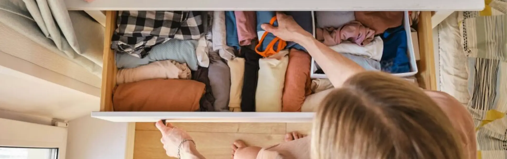

Hjemmet
Guide: Skab mere ro i dine omgivelser
Vores omgivelser kan have stor betydning for, hvordan vi har det mentalt. Når der er mange ting omkring os, kan det skabe visuel støj og gøre det sværere at slappe af. Et mere enkelt og ryddeligt hjem kan hjælpe med at skabe en følelse af ro og overskuelighed i hverdagen. Minimalisme i hjemmet handler ikke om at have så få ting som muligt. Det handler om at skabe plads til det, der giver værdi i din hverdag. Her er nogle enkle trin, der kan hjælpe dig med at skabe mere ro i dine omgivelser.
Trin 1 – Start med et lille område
Når man vil skabe mere ro i hjemmet, kan det virke uoverskueligt at starte. Derfor kan det hjælpe at begynde med et lille område.
To Do:
- Vælg et lille område i dit hjem
- Det kan fx være et skrivebord, en hylde eller en skuffe
- Ryd området og fjern ting, du ikke bruger
Trin 2 – Fjern ting du ikke bruger
Over tid samler mange af os ting, som vi sjældent eller aldrig bruger. Når for mange ting fylder i vores hjem, kan det skabe en følelse af rod og uro.
To Do:
- Find ting du ikke har brugt i lang tid
- Overvej om de stadig giver værdi i dit hjem
- Donér, sælg eller gem ting, du ikke har brug for
Trin 3 – Skab rolige områder
Et hjem med færre ting og mere luft kan føles mere afslappende. Ved at skabe små rolige områder kan du gøre dine omgivelser mere behagelige.
To Do:
- Ryd overflader som borde eller reoler
- Behold kun få ting fremme
- Skab et område der føles roligt og enkelt
Trin 4 – Gør oprydning til en lille vane
Det er lettere at holde hjemmet overskueligt, hvis oprydning bliver en lille del af hverdagen. Små vaner kan gøre en stor forskel over tid.
To Do:
- Brug 5 minutter hver dag på at rydde op
- Læg ting tilbage på deres plads
- Undgå at lade rod samle sig
Reflektér over dine omgivelser
Tag et øjeblik og tænk over dit hjem.
- Er der steder i dit hjem, hvor der ofte samler sig rod?
- Føles nogle rum mere rolige end andre?
- Er der ting omkring dig, som egentlig ikke giver værdi længere?
Når du bliver mere bevidst om dine omgivelser, kan du lettere finde små steder, hvor du kan skabe mere ro.
Prøv at vælge én lille ændring fra guiden og se, hvordan det påvirker dit hjem.